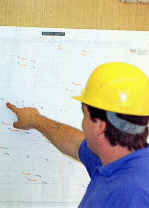

Baustellenabfälle weisen unterschiedliche Herkunft (Siedlungsabfälle, Wertstoffe, Verpackungsabfälle) auf. Deswegen ist der Sortieraufwand in der Regel bei Baustellenabfällen groß.
Für Wertstoffe wie Bauschutt, Bodenaushub, Holz oder Stahl sind Container vorzuhalten.
Für die Sammlung von Kleinstmengen von Wertstoffen wie Glas, Bleche oder Papier empfiehlt sich, eine Sammelstelle für Abfälle einzurichten. Die unterschiedlichen Abfallarten sind unterschiedlich zu lagern und zu beseitigen.
Die Art der Abfallsammlung auf der Baustelle sollte mit der Entsorgungsfirma abgesprochen werden.
Verbrennen von Abfällen ist verboten.